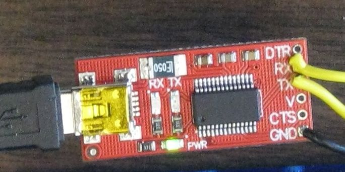
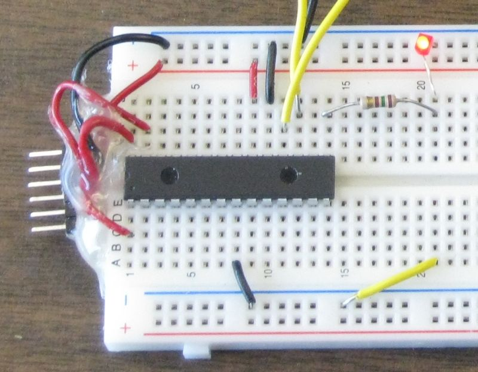
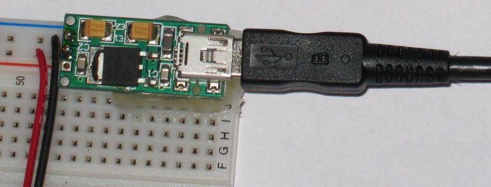

...back to raspberry_pi.html
A simple first project integrating the Raspberry Pi and a PIC18LF2620.
check out ssh to also see the configuration in the physics lab)

A headless Raspberry Pi will be running sshd (this runs by default). This permits a remote computer to access the Raspberry Pi over the LAN.
A serial connection is made to a PIC18LF2620. For now I am using a USB to serial translator board. This board cost about $14 in western Canada and it is easy to get since it is general purpose (works on the RPi but also on Windows PC)

The USB to serial translator board connects to the USB of the Raspberry Pi.
The USB to serial translator board connects to the PIC as follows:
The Tx of translator board connects to the Rx of the PIC
The Rx of the Translator board connects to the Tx of the PIC
Ground of the translator board connects to ground of the PIC
The PIC is on a solderless breadboard.

The PIC has it's own power supply to avoid risk of damage to the USB fuse on
Raspberry Pi board.
I'm running the PIC at 3.3 volts.

In the future I might run it at 5 volts (many sensors require 5 v). The PIC is
tolerant of 5 volts on the inputs even with the 3.3 volt supply. This is
different than the Raspberry Pi GPIO interface.
The USB serial adapter board I am using is currently set to 5v. It will work with the PIC with this setting. It can be converted for 3.3 volt operation by cutting a trace and adding a solder bridge.
There are different options for talking to the PIC MCU.
For initial testing it is simplest to use a virtual terminal.
On the remote computer a ssh session is started using PuTTY.
Within PuTTY one can login and start a CLI (command line interface) session.
Within the CLI session one can start minicom (a terminal program that runs on the RPi). The first time minicom is run some basic configuration should be done (so it knows which device to use).
to run configuration use sudo minicom -s (if sudo not used then write to configuration file will fail)
select Serial port setup
select A - Serial Device
edit dev line to /dev/ttyUSB0
select F - Hardware Flow Control : yes
edit line to say no -- not using flow control
select Save setup as dfl
select Exit
Once this testing has been done one could interact with scripts (say python or bash) or with C programs.
A simple place to start testing is with a C program written for the PIC18LF2620 that does nothing but echo everything it receives from the Raspberry Pie back to the Raspberry Pi. This can be used for loop-back tests (always handy for troubleshooting).
//*************************************************************************************** #include <stdio.h> #include <delays.h> #include "USARTfunc.h" // header for configureUSART(baud) , set_osc_32MHz() // and WaitOneSecond() void main(void) { unsigned char Rx=0; set_osc_8MHz(); // set MCU to run at 8 MHz configureUSART(115200ul, 8); [printf](http://www.opengroup.org/onlinepubs/009695399/functions/printf.html)("\tpic18lf2620\r\nAugust 12, 2012\r\nby Dan Peirce B.Sc.\r\nEcho to sender....\r\n"); test_overrun(); while(1) { Rx = echoRx(); // function sends Rx value to Tx (unless null) test_overrun(); } }
void configureUSART(unsigned long baudrate, unsigned char osc_freq_MHz); void set_osc_8MHz(void); void WaitOneSecond(void); void test_overrun(void); unsigned char echoRx(void);
// These are not C statements but directives to the C18 compiler. They result in configuration // bits in the PIC18F4525 being set in the flash memory. This configuration is set when the // PIC is programmed by the PICkit2 programmer and before any program starts to run in the PIC. #pragma config WDT = OFF #pragma config OSC = INTIO7 // puts osc/4 on pin 10 (0n 28 pin package) to check freq #pragma config MCLRE = OFF #pragma config LVP = OFF #pragma config PBADEN = OFF // PORTB<4:0> are digital IO //**************************************************************************************** #include <stdio.h> #include <p18f2620.h> #include <usart.h> // library containing serial communtication functions #include <delays.h> // library containing delays - i.e. wait for time t void resetRxEnable(void); void configureUSART(unsigned long baudrate, unsigned char osc_freq_MHz) { unsigned int spbrg; TRISCbits.TRISC6 = 0; // set TX (RC6) as output TRISCbits.TRISC7 = 1; // and RX (RC7) as input // For a 16-bit sbprg value with USART_BRIGH_HIGH setting. // Formula from datasheet is Baudrate = FOSC/ (4 * (spbrg + 1 )) spbrg = (unsigned int)( ((float)osc_freq_MHz * 1.0e6) /(4.0*(float)baudrate) + 0.5 - 1.0); OpenUSART( USART_TX_INT_OFF & USART_RX_INT_OFF & USART_ASYNCH_MODE & USART_EIGHT_BIT & USART_CONT_RX & USART_BRGH_HIGH, spbrg ); // OpenUSART is part of the C18 usart.h library BAUDCONbits.BRG16 = 1; // needed so we can use a 16-bit spbrg // Note that this is not discussed in the c18 Compiler Libraries guide Delay10KTCYx(1); // small 4x0.0125 s delay to allow communication speed to stabilize // part of the C18 delays.h library } // original delay was 0.0125 s but that was with Fosc at 32 MHz (now is 8MHz) void test_overrun(void) { if(RCSTAbits.OERR == 1u) resetRxEnable(); //check for overrunn error; reset if needed } void resetRxEnable(void) { [printf](http://www.opengroup.org/onlinepubs/009695399/functions/printf.html)("\r\n***caught Rx overrun!***\r\n"); RCSTAbits.CREN = 0; RCSTAbits.CREN = 1; } unsigned char echoRx(void) { unsigned char rx=0; if(DataRdyUSART()) { rx = ReadUSART(); WriteUSART(rx); } return rx; } //*********************************************************************************** // set_osc_8MHz() // sets the oscillator from the default 1 MHz to 8 MHz //*********************************************************************************** void set_osc_8MHz(void) { int i; OSCCONbits.IRCF2 = 1; // Set the OSCILLATOR Control Register to 8 MHz OSCCONbits.IRCF1 = 1; OSCCONbits.IRCF0 = 1; } void WaitOneSecond(void) { Delay10KTCYx(200); // wait 10 000 * 200 * TCY = 1.000 seconds }
new page rpi_pic_led.html